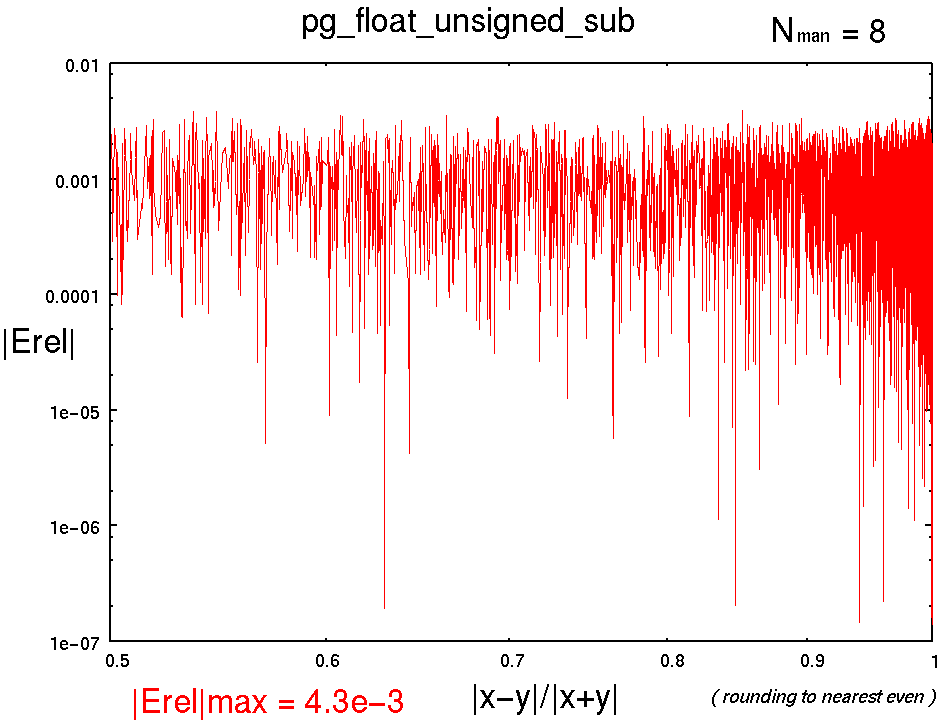
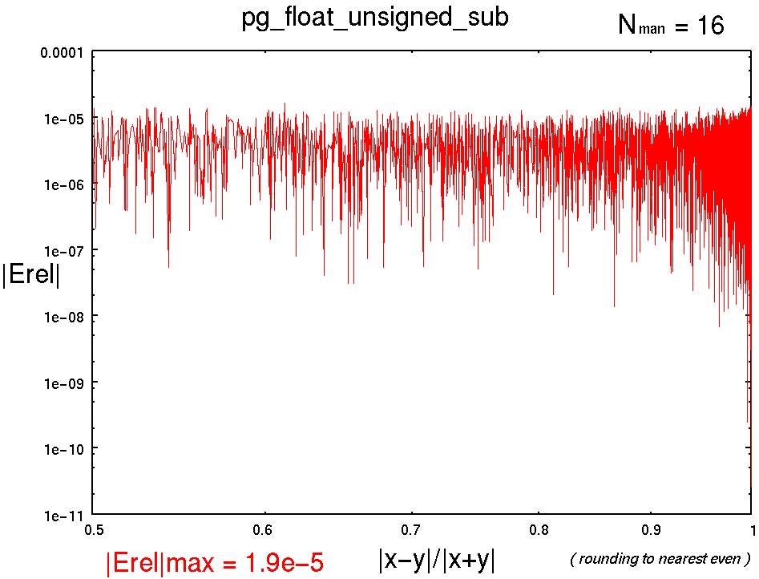
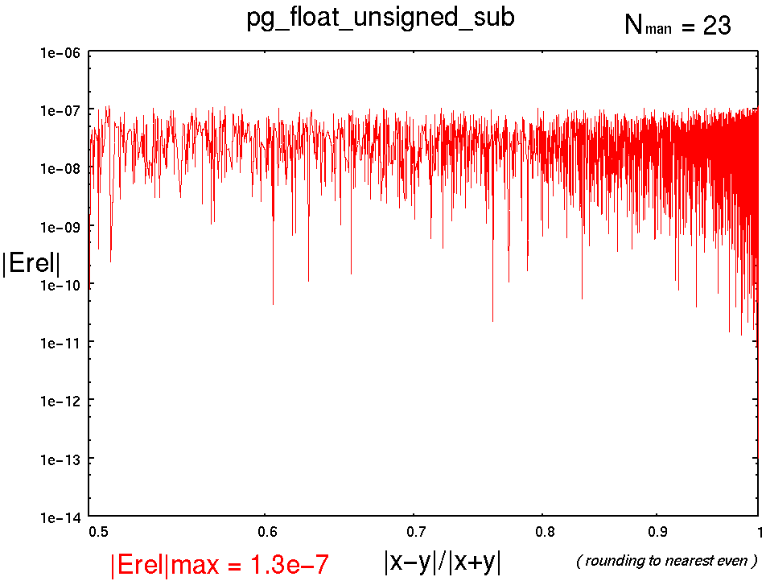

[↑TOP]
pg_float_unsigned_sub : 浮動小数点型 符号なし減算
書式
pg_float_unsigned_sub(x, y, z, NFLO, NMAN, NST,RM);
引数
- x
- : 被減算数
- y
- : 減算数
- z
- : 減算結果( x - y)
- NFLO
- : 浮動小数点ワードビット幅
- NMAN
- : 仮数部(精度)ビット幅
- NST
- : パイプラインステージ数
- RM
- : 丸めモード(省略可) 全9種類. 省略時はTOEVEN.
記述例
pg_float_unsigned_sub(x, y, z, 18, 8, 3, 0);
pg_float_unsigned_sub(x, y, z, 26, 16, 3);
pg_float_unsigned_sub(x, y, z, 33, 23, 3, 0);
概要
x,yとの加算結果をzに渡す.
また, x,yは同符号とする.
パイプラインマップ
NST 1 : 1[-] 2[-] 3[-] 4[-] 5[-] 6[-] 7[-] 8[-] 9[O]
NST 2 : 1[-] 2[-] 3[-] 4[O] 5[-] 6[-] 7[-] 8[-] 9[O]
NST 3 : 1[-] 2[-] 3[O] 4[-] 5[-] 6[O] 7[-] 8[-] 9[O]
NST 4 : 1[-] 2[O] 3[-] 4[O] 5[-] 6[O] 7[-] 8[-] 9[O]
NST 5 : 1[-] 2[O] 3[O] 4[-] 5[O] 6[-] 7[O] 8[-] 9[O]
NST 6 : 1[O] 2[O] 3[O] 4[-] 5[O] 6[-] 7[O] 8[-] 9[O]
NST 7 : 1[O] 2[O] 3[O] 4[O] 5[O] 6[-] 7[O] 8[-] 9[O]
NST 8 : 1[O] 2[O] 3[O] 4[O] 5[O] 6[O] 7[O] 8[-] 9[O]
NST 9 : 1[O] 2[O] 3[O] 4[O] 5[O] 6[O] 7[O] 8[O] 9[O]
性能(Xilinx Virtex-II PRO XC2VP70-5FF1517C)
----------------------------------------------------------------------------------------
pg_float_unsigned_sub(x, y, z, 18, 8, NST, 0);
NFLO=18
NMAN= 8
RM=0
NST, MHz , Cpath, Slices, FFs, LUTs
1 , 64.687, 0-9 , 111, 18, 197
2 , 99.327, 0-4 , 116, 50, 205
3 , 108.648, 0-3 , 115, 86, 200
4 , 149.566, 4-6 , 116, 124, 198
5 , 154.321, 0-2 , 129, 141, 210
6 , 187.477, 3-5 , 162, 198, 210
7 , 228.885, 5-7 , 168, 207, 222
8* , 221.092, 5-6 , 164, 221, 221
9* , 221.092, 5-6 , 173, 237, 221
(* : not efficient)
----------------------------------------------------------------------------------------
pg_float_unsigned_sub(x, y, z, 26, 16, NST);
NFLO=26
NMAN=16
RM=6
NST, MHz , Cpath, Slices, FFs, LUTs
1 , 46.621, 0-9 , 221, 26, 398
2 , 85.638, 4-9 , 237, 76, 434
3 , 94.211, 0-3 , 238, 128, 432
4 , 134.716, 4-6 , 235, 190, 432
5 , 149.522, 0-2 , 243, 211, 443
6 , 151.676, 3-5 , 274, 284, 443
7 , 186.047, 5-7 , 292, 318, 456
8* , 180.865, 5-6 , 285, 334, 461
9* , 180.865, 5-6 , 299, 359, 462
(* : not efficient)
(8*の5-6は
FDS->LUT3->LUT3->LUT4->FDS,
7の 5-7は
FDS->LUT3->LUT3->LUT3->LUT4->LUT4->FDS
なのに8*の5-6の方が遅いのは 7の5-7がLUT間に専用MUXがマップされているため.
8*ではLUT間のMUXが使われない.)
----------------------------------------------------------------------------------------
pg_float_unsigned_sub(x, y, z, 33, 23, NST, 0);
NFLO=33
NMAN=23
RM=0
NST, MHz , Cpath, Slices, FFs, LUTs
1 , 46.469, 0-9 , 508, 33, 758
2 , 73.067, 0-4 , 526, 117, 799
3 , 84.140, 3-6 , 533, 161, 805
4 , 102.365, 4-6 , 568, 274, 789
5 , 144.530, 3-5 , 566, 265, 770
6* , 144.530, 3-5 , 616, 352, 770
7 , 165.453, 2-3 , 662, 446, 790
8* , 165.453, 2-3 , 648, 455, 808
9* , 165.453, 2-3 , 666, 486, 808
(* : not efficient)
(6* : NMAN23用に 1[-] 2[O] 3[O] 4[O] 5[O] 6[-] 7[O] 8[-] 9[O] を別途用意すればいいかな. まあしばらくはほってきましょう)
演算精度 |Erel|max , ( |x-y|/|x+y| >0.5 )
-
pg_float_unsigned_sub(x, y, z, 18, 8, NST, 6);
|Erel|max = 4.3e-3
( |x-y|/|x+y| >0.5 )

-
pg_float_unsigned_sub(x, y, z, 26, 16, NST, 6);
|Erel|max = 1.9e-5
( |x-y|/|x+y| >0.5 )

-
pg_float_unsigned_sub(x, y, z, 33, 23, NST, 6);
|Erel|max = 1.3e-7
( |x-y|/|x+y| >0.5 )

参照
Change Log
- 2004.10.27 : 精度グラフ追加
- 2004.10.11 : the first edition by T. Hamada
{kind=link}
{kind=link}
{kind=link}